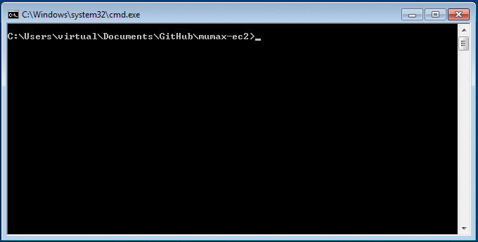

MuMax-EC2
This software allows MuMax3 GPU-accelerated micromagnetic simulations to be run on a computer without a GPU card. With your Amazon Web Services (AWS) account, virtual computer instances are created using the Elastic Compute Cloud (EC2). These instances provide on-demand (price per hour) access to physical GPU hardware, that allow the simulations to be run remotely. The script interface mimics MuMax3 and also forwards the web-based interface, so working with MuMax-EC2 is as easy as MuMax3.
Authors: Colin Jermain, Graham Rowlands
License: MIT License
Source code: ralph-group/mumax-ec2 on GitHub
Installing
MuMax-EC2 requires an AWS account and Python 2.7. Instructions for setting up and installing the program are provided depending on your operating system.
|
|
|
|
Usage
A full tutorial is provided to get you started that covers all the functionality of the program.
Below is an example of running Standard Problem 4 with MuMax-EC2 on a Windows machine.
